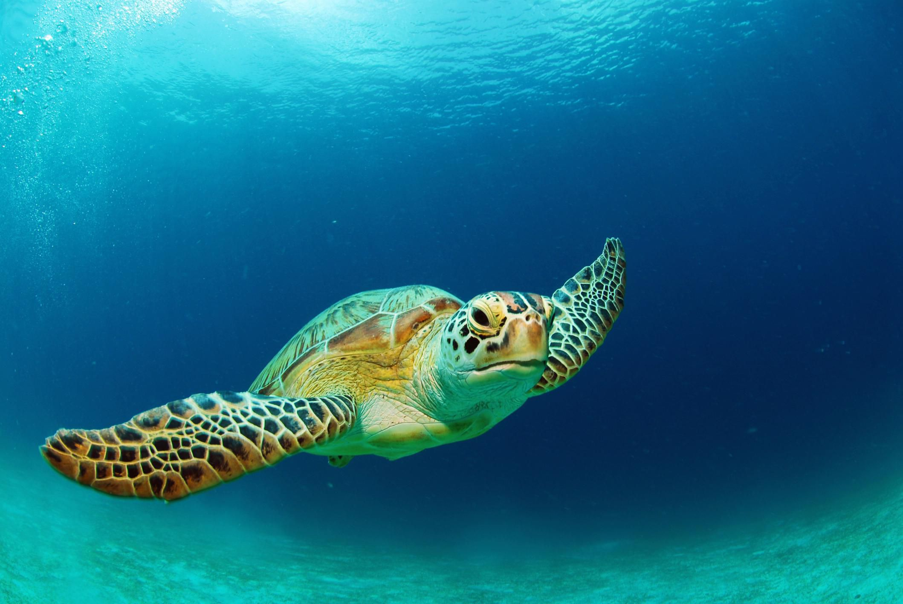

This is a Sea Turtle! It is an ancient reptile!
Basic Information Of Sea Turtle
- It is estimated that only one out of 1,000 hatchlings survives to be an adult.
- The sex of sea turtles, like other reptiles, depends on the temperature in the nest.
-
Sea turtles dont have a favorite food (though most will eat jellyfish).
- Some sea turtles migrate very long distances while others stay close to home.